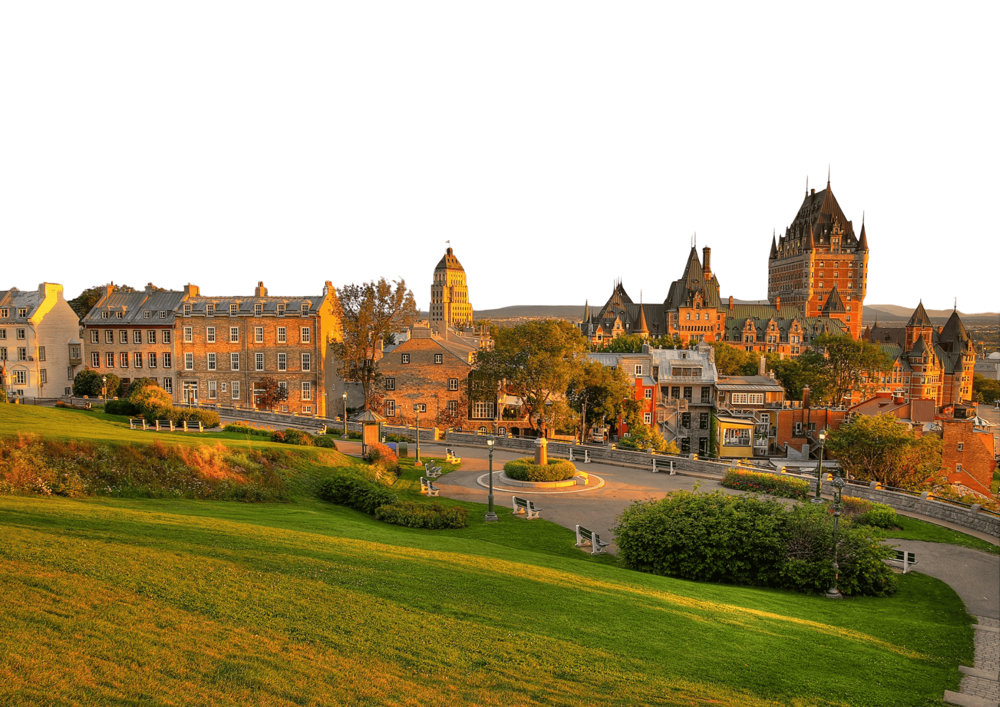
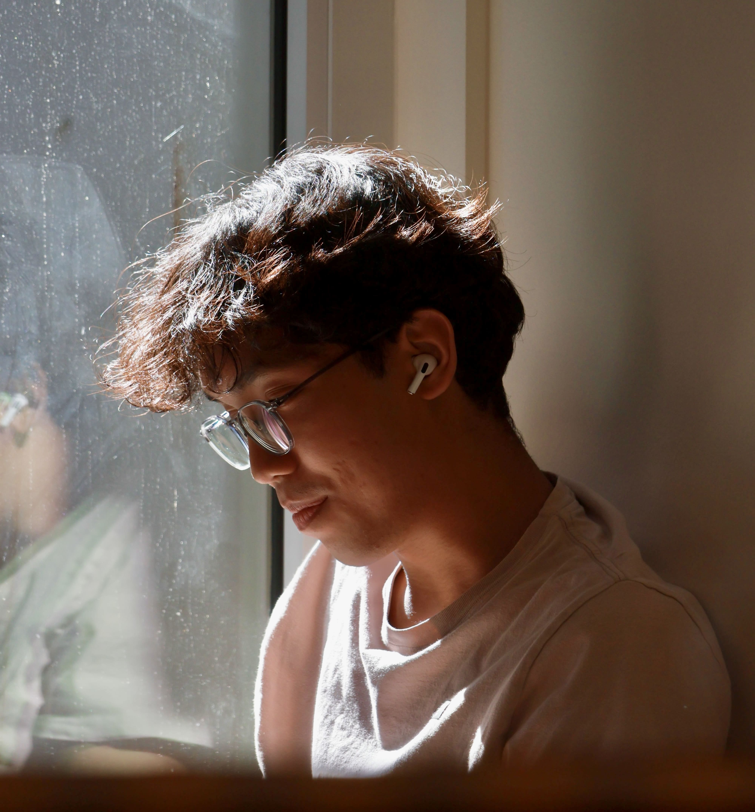
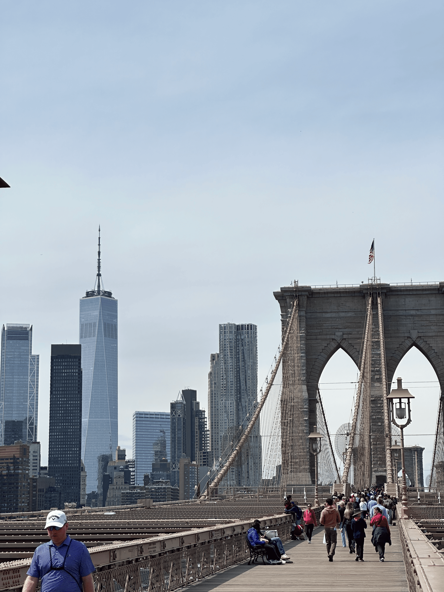
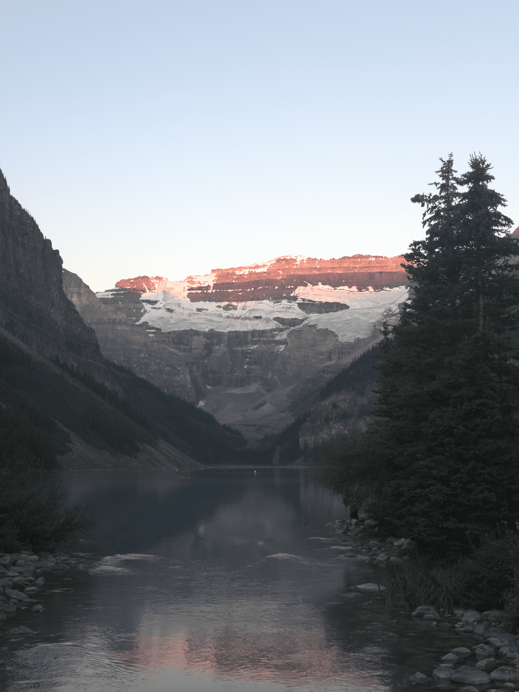

Amir Hariz
a chemical engineering student 🇨🇦/🇲🇾

a chemical engineering student 🇨🇦/🇲🇾


I am a second-year chemical engineering student at University of British Columbia with a growing interest and focus in process design, facility planning, and data-driven problem-solving. I am highly enthusiastic about expanding my knowledge in these areas and applying what I learn to real-world challenges.
Through my academic coursework and laboratory sessions, I have tackled engineering challenges spanning fluid dynamics, material and energy balances, and large-scale process design. These hands-on projects have allowed me to bridge theoretical chemistry and physics with practical industrial applications, from designing utility facilities to executing steady-state chemical synthesis models.
To support my design and planning work, I regularly apply programming tools to chemical engineering problems. I utilize Python to build simulation models and leverage libraries like NumPy, pandas, and SciPy for data optimization and matrix manipulations.
Outside of my studies, my leadership roles in international and cultural student societies highlight my abilities as a versatile all-rounder. By steering digital media initiatives, cross-club event logistics, and student mentorship programs, I have cultivated strong teamwork, communication, and project management skills. These collaborative environments have strengthened my ability to coordinate effectively with diverse teams and clients. Fully bilingual in English and Malay, I am always looking to connect with peers and industry professionals to discuss innovations in process engineering and design.


When I’m taking a break from the lab and textbooks, I love having creative outlets to completely unplug. You can usually find me playing the guitar or piano, or experimenting with new recipes in the kitchen.
But my biggest passion outside of school is easily traveling and exploring new environments. Living in British Columbia offers an amazing backdrop for weekend getaways to places like Whistler, but I also love experiencing the completely different energy of major cities like NYC. Wherever I end up, I rarely leave without my camera in hand. For me, photography is more than just taking pictures; it is a way to actively document my travels, capture the unique atmosphere of the places I visit, and hold onto those great memories.
After a busy trip or a long week, I also love to reset by heading outdoors. Hitting a local trail for a casual hike is one of my favorite ways to get some fresh air and clear my head.
Beyond that, I am just someone who loves picking up new skills for fun, even if they have nothing to do with my major. My latest side project? Teaching myself HTML and CSS so I could design and code this very website from scratch!



